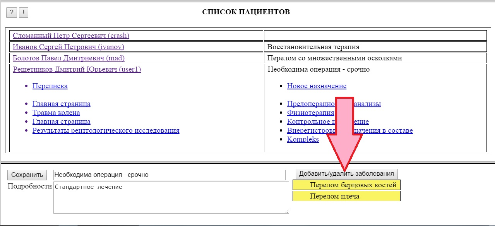
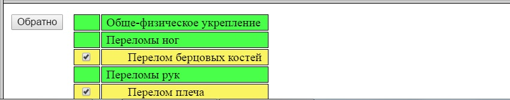

¬ заметках о пациенте (открываютс€ при клике по пациенту на вкладке "ѕациенты") по€вилась возможность указать диагностированные заболевани€.
Ёта информаци€ в дальнейшем будет использоватьс€ при отборе перечней возможных назначений дл€ данного клиента.
ƒиагностированные заболевани€ отображаютс€ в правой части формы заметок под кнопкой "ƒобавить/удалить заболевани€".

ƒл€ добавлени€ в –еестр нового заболевани€ использует€ кнопка "ƒобавить заболевание в реестр".
ѕри этом открываетс€ список заболеваний, работа с которым аналогична работе со списком заболевний на в арточке назначени€.
≈динственным отлочием €вл€етс€ то, что в список заболеваний пациента нельз€ включить группу заболеваний - только одно или несколько отдельных заболеваний.
ѕосле выбора нужных заболеваний необходимо нажать кнопку "ќбратно" в левом верхнем углу формы, после чего сохранить заметки обычным пор€дком.

ќповещение по email о приглашени€х, назначени€х и сообщени€х
ѕри направлении пользователю приглашени€, назначени€ или сообщени€ система формирует сообщение на указанный при регистрации адрес.